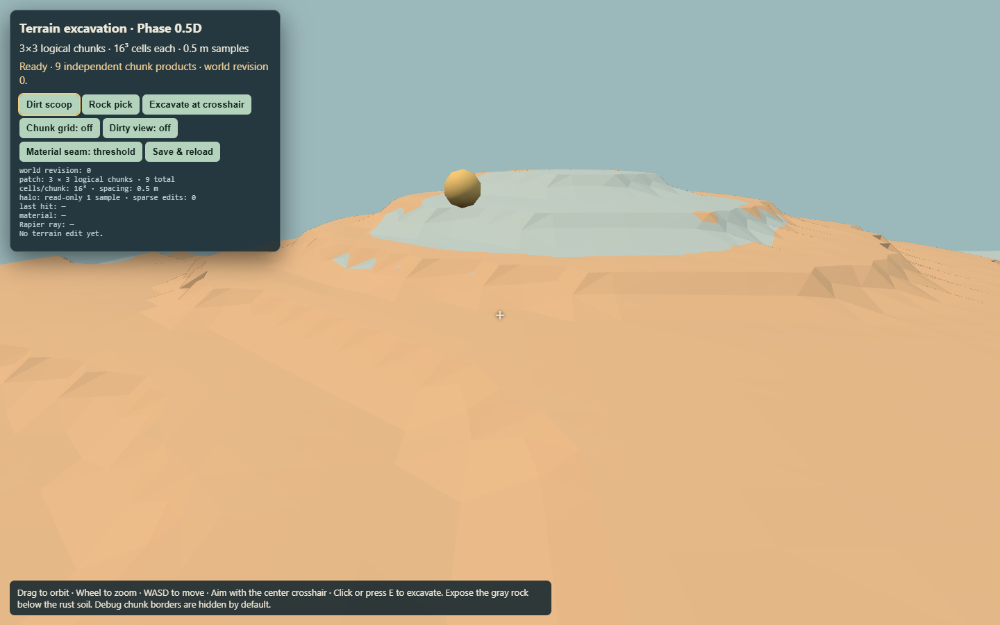
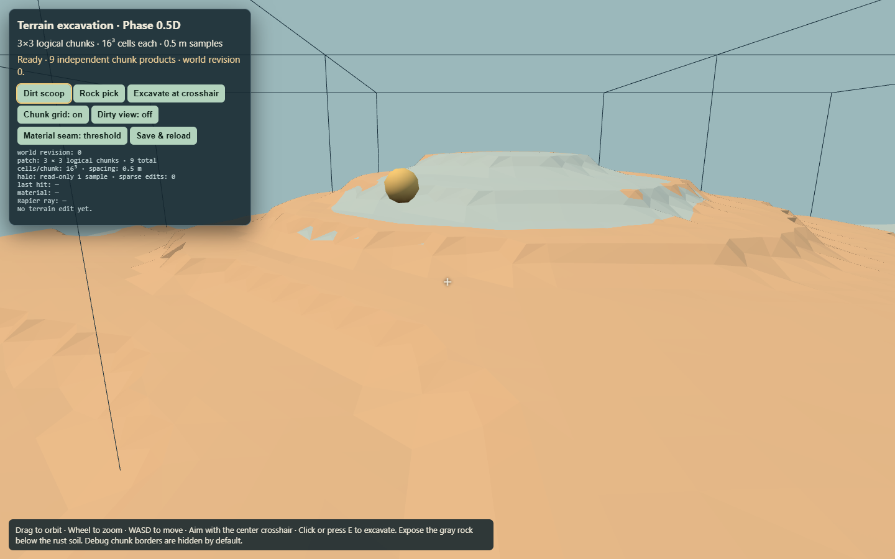
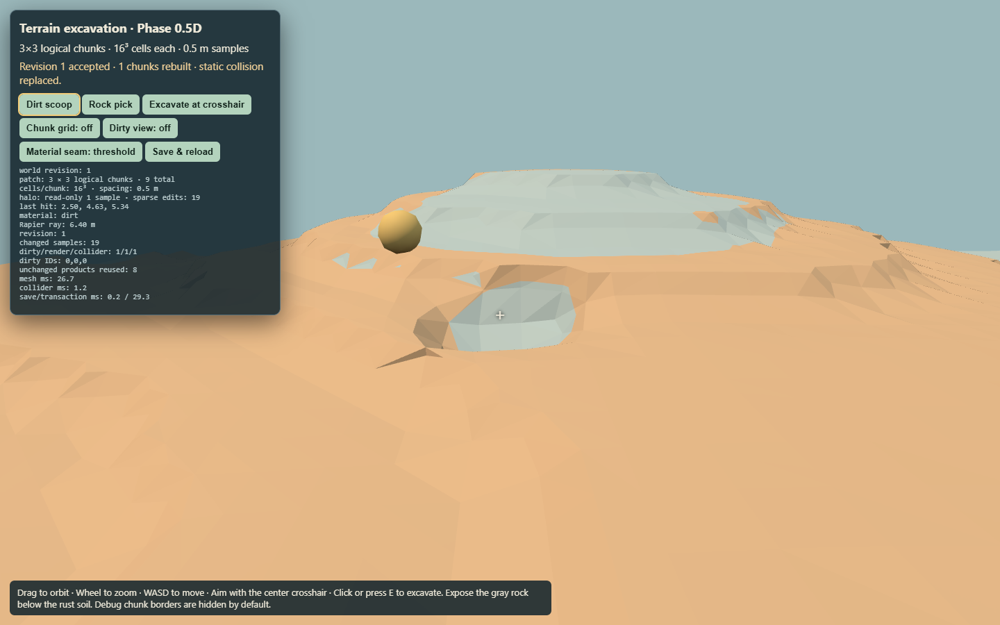
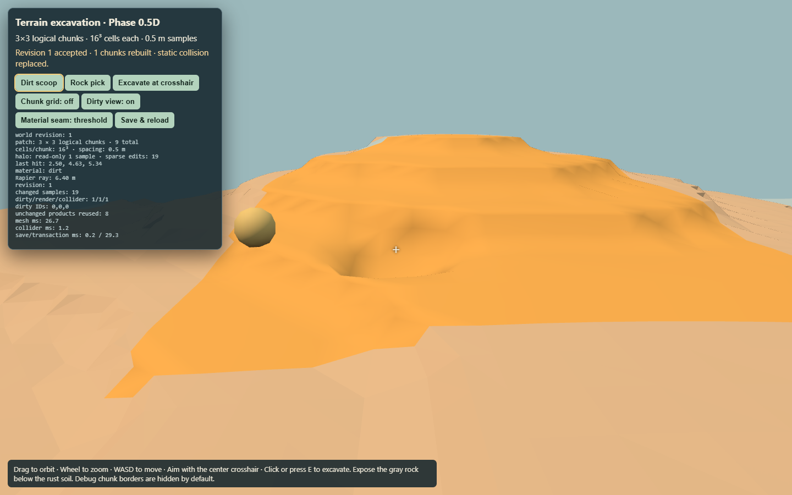
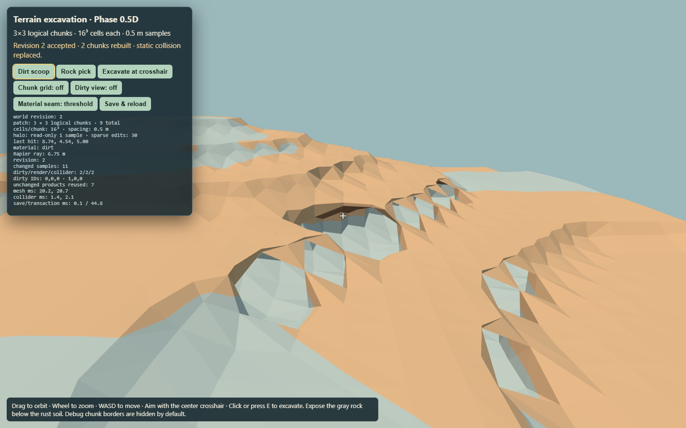
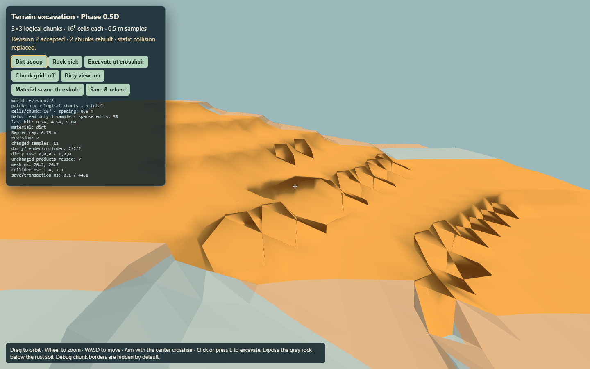
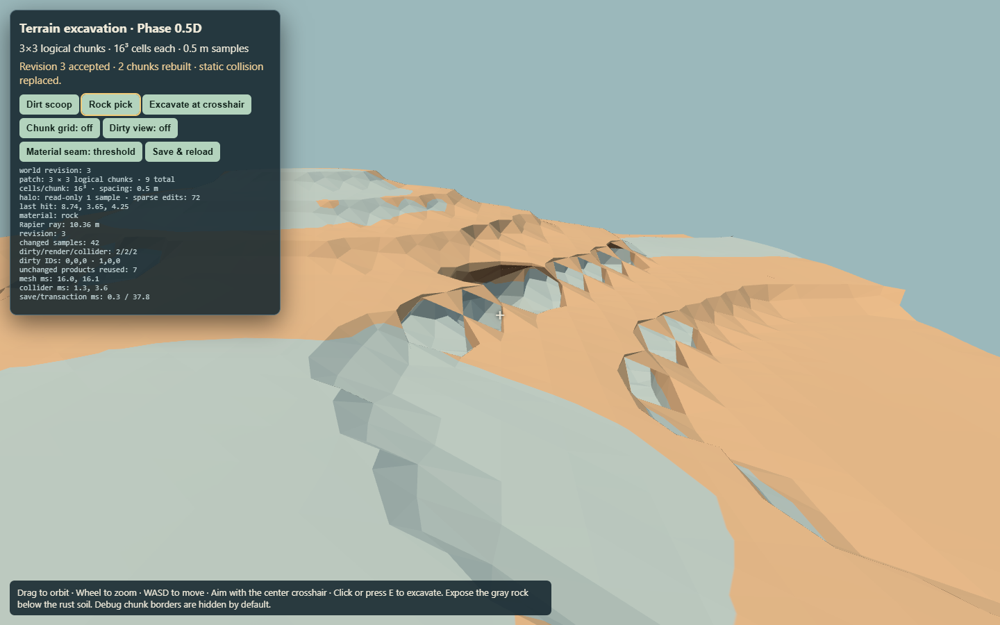
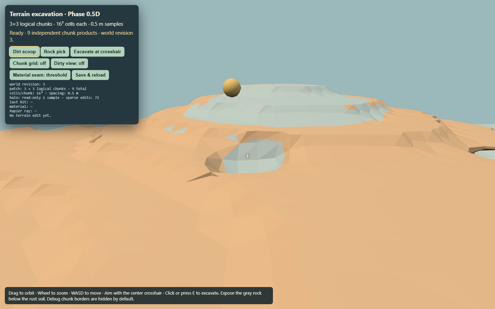

HOLD. The captures demonstrate an interior edit and a real two-chunk X-boundary edit. The later rock edit stays at that boundary; it is not a four-chunk corner edit. MatterActor extraction, cross-seam tunnel, collision-gap and actor reload scenarios remain unproved. See the report and raw receipt.







